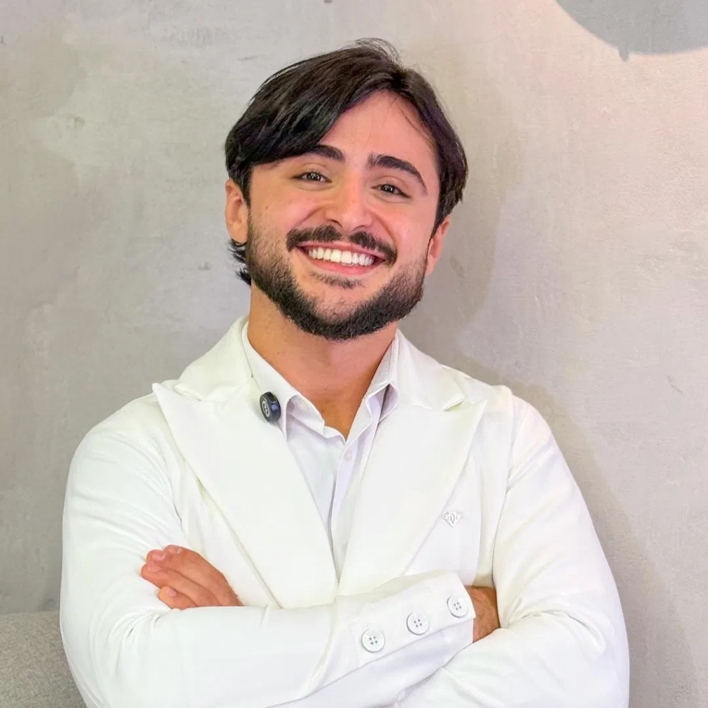
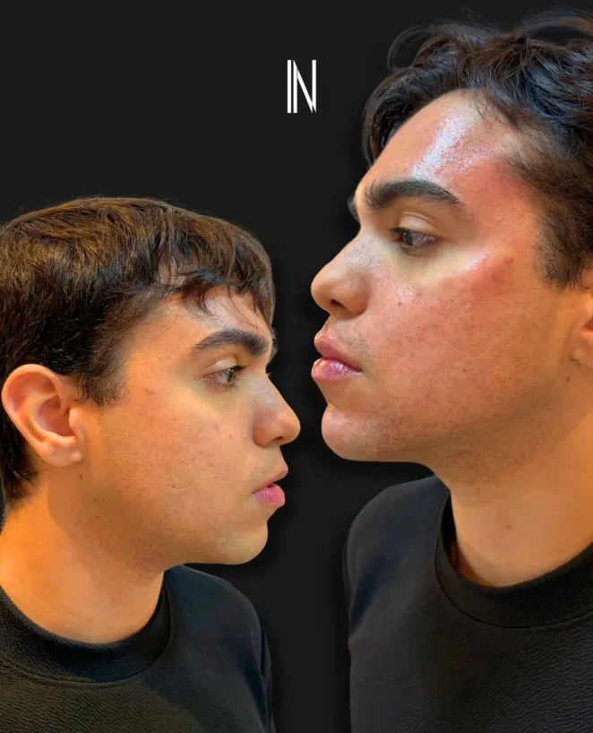
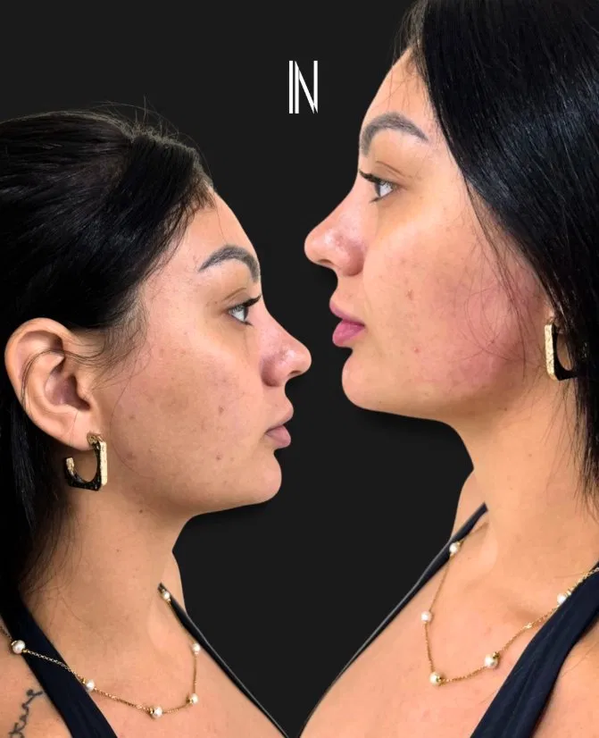
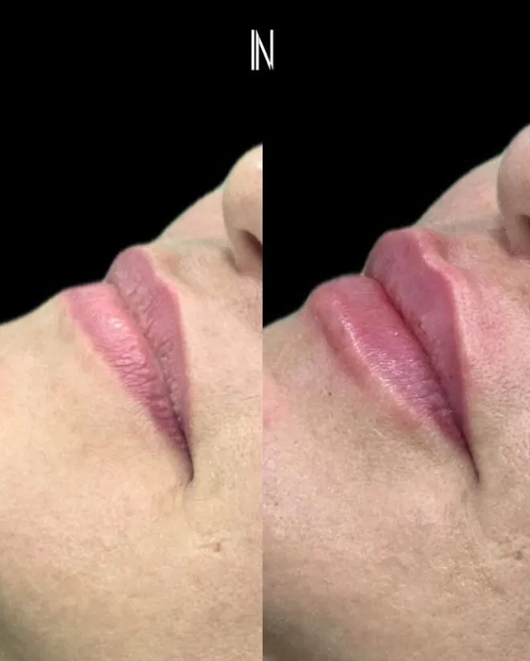

Transformação odontológica de excelência e procedimentos faciais sob a ótica da naturalidade absoluta. Lentes de resina, Botox, preenchimentos e lipo de papada planejados de forma integrada para realçar sua expressão mais bela e elegante — sem exageros.

Como Cirurgião-Dentista especialista em estética bucal e Harmonização Orofacial (HOF), o Dr. Natanael Carvalho atua na intersecção exata entre a odontologia moderna e o requinte estético facial. Ele compreende que o sorriso é a peça central do rosto e que as linhas faciais são a sua moldura.
A formação cirúrgica odontológica confere a ele um **domínio anatômico inigualável da cabeça e pescoço**. Essa precisão cirúrgica garante que procedimentos como lentes de contato dental, toxina botulínica e preenchimentos sejam executados com máxima segurança, controle de dor e resultados naturais impecáveis, evitando distorções artificiais.
O ápice da transformação do sorriso. Facetas em porcelana ultra-finas e resinas estéticas de alta performance planejadas sob medida para alinhar, redefinir a cor e o formato dos dentes de forma conservadora.
Técnicas modernas de clareamento dental supervisionado em consultório ou caseiro personalizado. Géis ativados de alta tecnologia que promovem dentes mais brancos com absoluta segurança ao esmalte.
Restauração completa da saúde, função mastigatória e beleza bucal. Coroas, próteses sobre implantes e tratamentos reabilitadores desenhados para se fundir perfeitamente à sua arcada original.
Suavização refinada de rugas e marcas de expressão dinâmicas. Inclui **aplicação terapêutica odontológica** altamente eficaz para o controle do bruxismo, apertamento dental e correção de sorriso gengival.
Restauração de volumes faciais perdidos e sustentação óssea (malar/mandíbula). Escultura labial de alta precisão desenhada para ser a **moldura anatômica perfeita** para a beleza do seu sorriso.
Micro-injeções de ácido deoxicólico para redução definitiva da gordura localizada sob o queixo (papada). Proporciona emagrecimento facial, leveza e alta definição para a linha do perfil e pescoço.
Resultados reais que mostram como a odontologia estética e a harmonização orofacial, quando feitas com parcimônia, podem rejuvenescer e refinar o rosto com elegância.



Venha conhecer nosso espaço estruturado com as tecnologias mais seguras para sua harmonização e estética buco-facial. Estamos localizados na área médica mais nobre e acessível de Fortaleza/CE, prontos para oferecer um atendimento exclusivo e personalizado de altíssimo padrão.
"Fiz lentes de contato em resina e preenchimento labial com o Dr. Natanael. A sintonia entre meus novos dentes e o volume dos meus lábios ficou simplesmente espetacular. Ele é extremamente minucioso e o resultado foi ultra-natural!"
"A lipo de papada removeu a gordura localizada que me incomodava e a aplicação terapêutica de Botox aliviou meu bruxismo de forma imediata. O Dr. Natanael une conhecimento odontológico anatômico fantástico com atendimento de muita classe e segurança!"
"O consultório do Dr. Natanael é impecável. Fiz a harmonização buco-facial completa e o sorriso novo mudou minha autoestima por completo. Natural, elegante e totalmente seguro. Recomendo para quem busca o máximo requinte clínico em Fortaleza!"